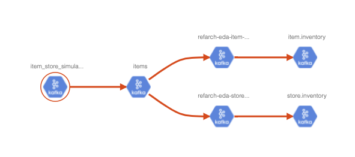

Apache Atlas
Apache Atlas is a data governance tool which facilitates gathering, processing, and maintaining metadata.
The architecture illustrates that Atlas expose APIs to add and query elements of the repository, but also is integrated with Kafka for asynchronous communication.

The Core framework includes a graph database based on JanusGraph.
The Kafka integration can also being used to consume metadata change events from Atlas.
Key features
- Centralized metadata management platform
- Data classification based on rules and regex. Identify the incoming data and filter them out based on those classifications.
- Data lineage: shows the origin, movement, transformation and destination of data.
Concepts
Some important concepts to know:
- a
Typein Atlas is a definition of how particular types of metadata objects are stored and accessed. A type represents one or a collection of attributes that define the properties for the metadata object. - An
Entityis an instance of a Type -
A type has a metatype. Atlas has the following metatypes:
- Primitive metatypes: boolean, byte, short, int, long, float, double, biginteger, bigdecimal, string, date
- Enum metatypes
- Collection metatypes: array, map
- Composite metatypes: Entity, Struct, Classification, Relationship
-
Atlas comes with a few pre-defined system types: Referenceable, Asset, Infrastructure, DataSet, Process. The ones very interesting are:
-
Infrastructure extends Asset and may be used for cluster, host,...
- DataSet extends Referenceable, represents an type that stores data. Expected to have a Schema to define attributes
- Process extends Asset represents any data transformation operation.
- Relationships to describe connections between entities.
- We can define
Classificationcan be associated to entities but are not attributes:
{
"category": "CLASSIFICATION",
"name": "customer_PII",
"description": "Used for classifying a data which contains customer personal information, hence indicating confidential private",
"typeVersion": "1.0",
"attributeDefs": [],
"superTypes": []
}
- A type can extend another type: A
kafka_topic_schemais an array ofkafka_message_schema:
{
"superTypes" : [ "kafka_topic" ],
"category" : "ENTITY",
"name" : "kafka_topic_and_schema",
"attributeDefs" : [
{
"name" : "value_schema",
"typeName" : "array<kafka_message_schema>",
"isOptional" : true,
"cardinality" : "SINGLE",
"valuesMinCount" : 1,
"valuesMaxCount" : 1,
"isUnique" : false,
"isIndexable" : false
},
]
}
Remarks
Each of the predefined sources have matching type definitions. For Kafka, it may be needed to adapt the definition or develop new definition to support and end-to-end governance of Kafka components.
Getting started
- Start with docker:
docker run -d -p 21000:21000 -p 21443:21443 --name atlas sburn/apache-atlas /opt/apache-atlas-2.1.0/bin/atlas_start.py
Login in as admin/admin.
- Start with a docker compose:
services:
atlas:
container_name: atlas
hostname: atlas
image: sburn/apache-atlas
ports:
- 21000:21000
- 21443:21443
environment:
MANAGE_LOCAL_HBASE: "true"
MANAGE_LOCAL_SOLR: "false"
command:
/opt/apache-atlas-2.1.0/bin/atlas_start.py
volumes:
- $PWD/environment/atlas/data:/tmp/data/
- Define new types See project eda-governance:
example define a Kafka_Cluster type to be an Infrastructure
"entityDefs": [
{
"superTypes": [
"Infrastructure"
],
"category": "ENTITY",
"name": "eda_kafka_cluster",
"description": "a Kafka Cluster groups multiple Kafka Brokers and manage topics",
"typeVersion": "1.0",
"attributeDefs": [
{
"name": "cluster.name",
"typeName": "string",
"isOptional": false,
"cardinality": "SINGLE",
"valuesMinCount": 1,
"valuesMaxCount": 1,
"isUnique": true,
"isIndexable": true
},
....
- Define dataset entities
"entities": [
{
"typeName": "eda_kafka_cluster",
"createdBy": "maas_service",
"attributes": {
"qualifiedName": "assets-arch-eda.eda-dev",
"cluster.name": "eda-dev",
"description": "EDA team's event streams 2020 cluster",
...
The qualifiedName is important to define some naming convention like <kafka_component>@<clustername> for example.
Also important that entities represent instances. So if the same topic is defined into two clusters we need to
have two entities in Atlas using the different qualifiedNames.
- Define process entities
For example an application is a process:
- Define relationship between any defined types. Example a topic is linked to a cluster:
{
"category": "ENTITY",
"name": "eda_kafka_topic",
"superTypes": [
"DataSet"
],
"attributeDefs": [
{
"name": "cluster",
"typeName": "eda_kafka_cluster",
"isOptional": false,
"cardinality": "SINGLE",
"isUnique": false,
"isIndexable": true
},
{
"name": "clusterQualifiedName",
"typeName": "string",
"isOptional": false,
"cardinality": "SINGLE",
"isUnique": false,
"isIndexable": true
}]
}
Then the entity will use the following setting in the cluster name:
{
"typeName": "eda_kafka_topic",
"attributes": {
"qualifiedName": "items@eda-dev",
"name": "items",
"cluster": {"uniqueAttributes": {"qualifiedName": "eda-dev"}, "typeName": "eda_kafka_cluster"},
"clusterQualifiedName": "eda-dev"
}
}
We can also define the composition, like a broker is includes in the cluster and will not live outside of a cluster:
{
"superTypes": [
"Infrastructure"
],
"category": "ENTITY",
"name": "eda_kafka_cluster",
...
"attributeDefs": [
{
"name": "brokers",
"typeName": "array<eda_kafka_broker>",
"isOptional": true,
"cardinality": "SET",
"valuesMinCount": 1,
"valuesMaxCount": 1000,
"isUnique": false,
"isComposite": true,
"isIndexable": false,
"includeInNotification": false,
"searchWeight": -1,
"relationshipTypeName": "eda_kafka_topic"
}
Data lineage
Atlas will address part of the data lineage as we can declare the physical dependencies between components:

Continuous visibility of flows
Atlas can listen to Kafka topic to get updates to propagate to the entities. But there is no real time view of the data inside of the topic, for example, to see where a data land.